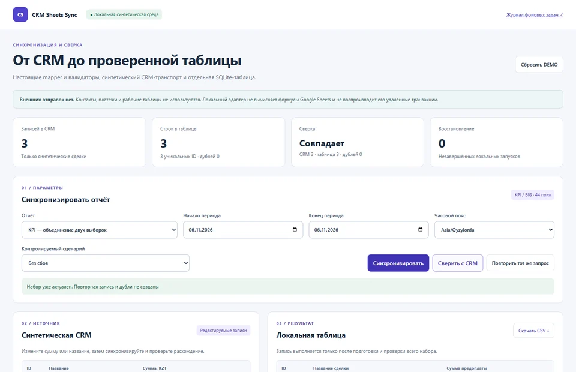

Автоматизация отчётности
CRM–Sheets Sync
Сделки из Bitrix24 в Google Sheets
Разработал сервис, который нормализует данные, удаляет дубли и обновляет отчёты с сохранением формул. Он обрабатывал наборы объёмом более 90 000 сделок.
Python · FastAPI · Bitrix24 API · Google Sheets API


Как устроен проект
- Задача
- Получать CRM-данные, обрабатывать их и обновлять отчёты без дубликатов и потери формул, с проверкой выгрузок и восстановлением после ошибок.
- Решение
- Подключил Bitrix24 REST API и Google Sheets API. Реализовал нормализацию данных, удаление дубликатов, сохранение формул, проверку выгрузок и журналирование. Для демонстрации создал локальные адаптеры и журнал SQLite, который сохраняет ход синхронизации и сведения для повторной сверки.
Что показывает демо
- Запустить синхронизацию и сверку
- Повторить без дублирования строк
- Восстановить выполнение после сбоя
Данные в демонстрации
Локальная таблица не воспроизводит весь формульный движок Google Sheets. Реальные CRM и Google API в DEMO не вызываются.
Локальный workbenchPython · mapping / retrySQLite журнал · адаптер